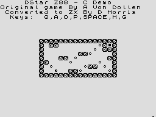

Please See the file readme.1st in the root directory of the archive for more information
The z88 Development Kit (hereafter known as z88dk) is an advanced set of tools allowing the production of complex programs for z80 based computers in either C or assembly language.
Although titled z88dk this a little bit misleading; as supplied the kit produces code for over a dozen z80 based machines and can be easily retargetted to any z80 based machine with the minimum of effort (see the file retarget.txt for details on how to do this.)
z88dk consists of the Z80 Module Assembler (z80asm) from Interlogic, a highly extended Small C+ compiler as well as various libraries implementing a large subset of the ANSI standard.
Code OutputFor the z88 the kit produces the following executables:
For the spectrum only absolute address executables are produced
Well, the package has finally been released, and we're now up to the umpteenth release, the status of it quite tricky, the source for all of it is released and anyone can port it to anything they feel like, however if any changes are made to the compiler, frontend, appmaker, optimizer, libraries, includes could you please let me know so that I we keep this kit unified. Any changes to z80asm should be reported to Gunther (see z80asm.txt file).
The Kit is free to use for free applications (though let me know if you do use it!), if you create a commercial product then I (and I'm sure Gunther) would be most appreciative of a copy.
Thanks to everyone who submitted bug reports, extends and uses z88dk
The Z88 Development Kit was, and always will be, "Made with Amiga." Though a Linux box or two did help along the way!
Move the tgz file to your home area and extract it using the command:
% tar xvzf [filename]
Once this has been done you'll find a new directory called z88dk and under that you'll find the following directory tree:
bin/ Executable directory
doc/ Place for doc files
examples/ A few example programs (for z88 and Spectrum)
include/ Header files for the C compiler
lib/ Where the runtime libraries and startup code live
libsrc/ Source for the runtime libraries
src/
src/appmake Source for the application maker
src/z80asm Source for the z80asm Module Assembler
src/copt Source for the z80 code optimiser
src/cpp Source for the DECUS cpp
src/sccz80 Source for the C compiler
src/zcc Source for the front end
support/ Miscellaneous code snippets
In order to use z88dk you'll need to first of all build the binaries, to this go into the z88dk directory and enter:
% make
And with a bit of luck things will be built for you! Next you'll need to add the z88dk/bin directory into your path, this is done easily under tcsh by editing your .cshrc (or .tcshrc) and inserting the line:
setenv $PATH $HOME/z88dk/bin\:$PATH
Whilst you're there add the lines:
setenv ZCCCFG $HOME/z88dk/lib/config/ setenv Z80_OZFILES $HOME/z88dk/lib setenv Z80_STDLIB $HOME/z88dk/lib/clibs/s.lib
If you use a different shell, eg bash or some other hideous contrivance you'll have to use a different method (consult a convenient manual/guru)
Log in a new shell, type zcc, and with a bit of luck you'll see a short message - congratulations you've now installed z88dk and can start programming!
Extract the archive to any directory you feel like, and add the following lines to your s:user-startup file:
;BEGIN Z88DK cd [directory where you installed it]/bin execute startzcc ;ENDF Z88DK
MSDOS/Win32 Installation
Grab the executables from Dennis' homepage?
The frontend of z88dk is called zcc, it is this that you should call if you want to do any compilations. To invoke the frontend use the command:
zcc [flags] [files to be compiled/linked]
The files can be either C files (.c) , preprocessed C files(.i), compiled C files (.asm), optimised compiled file (.opt) or assembled files (.obj), any combination of them can be mixed together and the relevant processed done on them.
Processing of a file list is done on each file in turn (i.e. preprocess, compile, optimise, assemble) at the end all files may be linked into a single executable if desired.
Options to control the action of the frontend:
+[file] Name of alternate config file
(must be the first argument)
-a Produce .asm (or .opt) file only
-c Do not link object files
-E Preprocess files only, leave output in .i file
-o [file] Specify output file for binary (default is a.bas for BASIC
programs and a.bin for application binaries)
-On Optimize compiler output (to .opt file)
n can be either 0 (none) 1,2,3, level 2 is recommended.
Level 3 is suitable for large programs (includes certain
lib functions to reduce size of code(!))
-v Verbose - echo commands as they are executed
-vn Don't be verbose
Options to control library usage:
-l[name] Link in a library - supply just the name (after placing them
in the correct directory)
-lm Link in the generic Z80 maths library
-lmz Link in and generate code for OZ's maths routines
-lmalloc Link in the near malloc routines
-lgfx Link in the graphics routines (for BASIC progams)
-lgfxapp Link in the graphics routines (for applications)
-lz88 Link in some Z88 application routines (eg mailboxing)
-lnet Link the the socket routines for ZSock
-m Generate .map files when assembling/linking
Options to control the type code produced:
-unsigned Implicitly define everything as unsigned unless explicitly
told otherwise.
-create-app Create an application image (i.e. bank 63,62 etc)
-make-app (App) Notify the compiler that you're trying to make an
application
-reqpag= (App) Number of 256 byte pages required for bad
application
-zorg= (App) Origin for a Z88 application
-safedata= (App) Amount of safedata required by your code
-defvars= (App) Where static variables should be dropped (only
valid for single file compilations, but see later)
-expandz88 (App) Expanded z88 required
-no-expandz88 (App) Expanded z88 not required (these two flags toggle
some startup code to check for an expanded machine)
-startup=3 Produce standalone code that can be run from a set
address from BASIC. Use -zorg= to change the address
-R (Use with above) produces relocatable code that can be
loaded into a DIM'd BASIC array.
-smartpf Intelligent printf routine handling
-no-smartpf Turn off the intelligent printf handling
-make-lib Shortcut to generate .o files from library .c files
-stackoffset Sets the stack offset for shared libs (see package.txt
for details)
Miscellaneous options:
-z80-verb Allow z80asm to be verbose, this tends to generate a lot
of output to the screen so may not be desired.
-cc Intersperse C code as comments in the assembler output, warning:
this *will* clobber some optimizations.
-Wall Turn on all the compiler warnings
-Wnone Turn off all compiler warnings
-Wn[num] Turn off the compiler warning [num]
-W[num] Turn on the compiler warning [num]
-asxx Cause the compiler to emit asxx compatible code
-Cp[option] Pass an option through to the pre-processor
-Ca[option] Pass an option through to the assembler
In addition, the flags, -D, -I, -U are passed through to the preprocessor.
Any unrecognised options are passed through to the compiler (to allow for improvements in the future.)
In order for z88dk to work on as many platforms as possible and so that it can be easily tweaked, retargetted and generally mutilated, the frontend (zcc) consults a plain text configuration file which is in the directory pointed to be the ZCCCFG variable.
The default is to use the file ZCCCFG/zcc.cfg which by default is a softlink to the configuration file for the z88. Should you mainly be targetting a different machine then simply change the softlink to the appropriate file.
Should you want to occasionally compile for other machines then as the construct your zcc line thusly:
zcc +[name] [....]
Where name is either z88, zx (Spectrum), or vz (for the VZ200/300 port). If you wish to use a config file located in the current directory or anywhere else on the system then specify the full path and filename - make sure the filename as the suffix .cfg.
Finally, for the sake of backwards compatibility zcc will take the value of the environmental variable ZCCFILE and use that config file.
The order of checking is as follows:
The Compiler is based upon the Small C/Plus compiler which has long history but can be basically be attributed to in chronological order: Cain, Van Zandt, Hendrix and Ronald Yorston. This last person in particular developed the compiler very considerably beyond the original specification for Small C set down by Ron Cain. James R. Van Zandt modified it to include floating point using floating routines originally written by Neil Colvin.
I too have further extended the compiler and hopefully made it into a true cross compiler which can produce z80 code from any machine.
The compiler accepts a subset of Standard C, for more details about C see the ubiquitous K&R - "The C Programming Language", if you want details about the compiler try and find the now out of print "The Small-C Handbook" by James E Hendrix. Information on the original incarnation of the compiler is available from Dr Dobbs CDROM, though at $50 it could be considered overpriced.
Small C+ supports a wide variety of datatypes which are similar to those in ANSI C, however it should be noted that the float type is a synonym for double - unlike big C there are not two different types.
Characters, ints and longs may be either signed or unsigned. Their maximum and minimum values are detailed in the table below. Pointers contain the addresses of data elements and are treated as unsigned ints when compared. NB. The size of pointers is likely to be userdefinable in the future:
| Type | Size | Min | Max |
| char | 1 byte | -128 | 127 |
| unsigned char | 1 byte | 0 | 255 |
| int | 2 bytes | -32767 | 32767 |
| unsigned int | 1 bytes | 0 | 65535 |
| long | 4 bytes | -2147483647 | 2147483647 |
| unsigned long | 4 bytes | 0 | 4294967296 |
The compiler supports a wide range of data types up to pointers to pointers to type.
Hopefully longs will now be correctly handled - including all arithmetic routines. One area which I haven't addressed is the conversion to and from doubles - they might work if they are smaller than 32767/65535 (signed/unsigned) for the generic routines. If the z88 maths routines are used any conversion should work perfectly fine.
Structures are declared in the usual way but may not contain instances of themselves, but may contain pointers to instances of themselves. Passing structures to a function is not permitted i.e. the only legal way a structure can occur in a function argument is as a pointer.
Far pointers are now supported, although library code only exists for the z88.
In this section I'll just raise a few of the more obscure aspects of the compiler
Rather a lot of optimization rules have been written for the unsigned char type. So use them as much as possible, particularly if you wish to use logical operations (&|^). Doubles are particularly unwieldy and the code which accesses them cannot be optimized particularly well, so avoid them if at all possible (not suprisingly they aren't the speediest of types either).
Other tips include define arrays and chars first of all in a function and ints later. Loop counting ints which are defined last of all will (when the code is optimized) generate much faster and smaller code.
If you do define a global (static) variable (as opposed to just declaring its presence) please note that the variable is embedded within the code and could not be changed if the program were to be blown onto an EPROM. Also important to note is that global doubles can not be initialised.
It is possible to mix C and assembly in a single source file, simply enclose the assembler language with #asm/#endasm or with #pragma asm/#pragma endasm. It isn't advisted that you mix assembler and C unless you know very well what you're doing!
Having said that, possibly the most useful use of the #asm/#endasm would be to initialize global variables (though this can be done automatically), this could be used to easily define udg graphics for example:
extern char udg[8];
main()
{
/* Put some code here! */
}
#asm
; A very boring graphic!
._udg defb 185,170,185,170,185,170,185,170
#endasm
Note the use of the _ prefix - this has been added to avoid label clashes with the library.
There is another method to call machine code from within C - the "asm function" this is an incredibly useful way of getting macros into z80asm, an example of how to do it is in the example/ directory, it's easier to read the example than to read me try to describe it(!)
As well as providing macros, asm() can be used to call machine code routines embedded with C expressions (caution!!). An example of using it this way follows:
main()
{
int j;
j=asm("call\tfish");
}
#asm
.fish
ld hl,1
ret
#endasm
Not perhaps the best example ever, but it illustrates its use - you can also return longs (kept in dehl) and chars (in h=0,l)
There is another feature of this version of Small C which could potentially be of much use if you were combining an existing assembler and a C program. This is the so called external pointer data type, and I shall illustrate it's use with a few C examples and the hypothetical assembler code produced, let us assume that hl is the integer j.
extern int data(address); address=16 bit Z80 address
function()
{
int j;
j=data ld hl,(address)
j=&data ld hl,address
}
You can similarly do the same trick with chars and doubles. I believe this to be slightly "non-standard" but could prove invaluable for finding out system variables etc.
It's important to remember that the compiler isn't gcc! It's still the Small C+ compiler, albeit with a lot of extensions, to this end remember the following:
I'll be honest, printf() is a beast, the integer version with formatting control ways in at over 2k which is a little large to say the least, so with a little bit of scraping around I present you with miniprintf! This function is a substitute for printf() with the following limitations:
If possible the compiler will scan your format string and if it sees just these types then it will use miniprintf() instead, however should you require the number of characters printed then we're in trouble! To disable this "intelligent" substitution specify the command flag -no-smartpf, it is enabled by default.
However miniprintf() is faster so perhaps on occasion (and with flagrant regard to memory requirements) you want to switch between them, you're a bit stuck if you can only specify flags on the command line, which is where the universal #pragma directive comes into play once more.
If in your source file you insert the line:
#pragma -no-smartpf
You'll turn off intelligent printf handling, but if you want it back again, just insert a:
#pragma -smartpf
And it'll be turned back on again, of course this #pragma has other uses, for example in compiling applications, the command line to compile them is, to be frank, a bit of a gobful at times, so simply stick these lines at the top of your source file(s):
#pragma -make-app #pragma -reqpag=0 #pragma -no-expandz88
Or whatever is appropriate for your application, all sccz80 specific flags can be specified within the source file, with the exception of -make-lib which has to be on the command line. So if you are using safedata space for static variables you can specify the DEFVARS address for each module. NB. I will not be responsible for tears and other distress that this may cause, if you use -safedata= or -defvars= then it is assumed you know what you're doing!!!
The optimizer supplied with the package is of the peephole variety - i.e. if it spots a a group of lines which it knows can be better represented in another way it will - it isn't (and never will) be a true optimizer and keep track of register usage and avoid repeated loading of a register with the same value.
Hopefully the rules supplied will not cause any software to fail (I haven't come across anything yet - and I have used them a lot), however if they do, then just mail me with the C source and the assembler output (raw and optimized) and I'll see what I can do to remedy the situation.
As previously noted the assembler and linker are combined in the z80asm Module Assembler from Interlogic. Using this program has numerous advantages over the traditional method of using a separate linker and assembler, briefly these are:
I will always support (where applicable) any new features in z80asm, for example in v1.2 of the kit the following new z80asm features are used:
In future z80asm is due to gain sections, these will of course be used by z88dk allowing more library routines to be used in z88 applications.
I have endeavoured to put together a fairly comprehensive library of functions which cover most of the things that smallish C programs would want to do. There are of course many omissions and undoubtedly many mistakes, so if you find one, could you either endeavour to fix it and send me the corrected version or alternatively let me know and I'll find the time to repair it.
malloc.hextern void *calloc(int number, int size_of_datatype); extern void *malloc(int bytes); extern free(char *); extern getfree(void); extern getlarge(void); extern initmem(int size);I've kludged around and come up with an extremely rudimentary malloc/free scheme for Small C. All memory is allocated out of character array! The routines actually come from a file I spotted on an MSX website a year or so ago, here's an example of how to use these routines.
#include <malloc.h>
/*
* Define the size of the pool, HEAPSIZE is a macro for unsigned char [ ]
*/
#define HPSIZE 8192
HEAPSIZE(HPSIZE)
main()
{
char *s;
int size;
initmem(HPSIZE); /* Initialise the heap - has to be done! */
s=malloc(100);
if (s == 0 ) exit(0);
free(s);
size=getfree(); /* Get total free memory */
size=getlarge(); /* Get size of largest block */
}
Don't forget to link with -lmalloc
Included within the package are a few C example programs, they're quite simple, but prove that the package does actually work!
There is also a number of demo applications hidden within the examples/apps directory, these are supplied in a format suitable for installing using the RAM Installer. I'll briefly describe them:
dstar A short puzzle game written almost entirely in C, it's quite a tricky one I warn you now!
rpn The application version of the Reverse Polish Notation calculator.
useless Completely useless, just a short demo of how to interact with OZ using C - demonstrates menus, help and commands
viewer A simple popup (about 20 lines of code), displays the contents of a file on to the screen (select a file from the Filer)
wc Another simple pop up which displays the number of bytes words and lines in a file (select a file fomr the filer)
I've started some (minimal) ZX Spectrum support, it's not perfect, but it's just enough to run a couple of example programs. I've implemented simple functions such as getk(),getkey() (non-standard) and putchar(), puts(),gets(),putc(). The miniprintf routines should also work. These few routines make it possible to run enigma.c successfully. I've also played around with dstar.c (just minor changes to the graphics routines) and it too now works on the Spectrum; some screenshots:
| A screenshot of the enigma.c program in action on the Spectrum. It's not exactly exciting, but it was the first program to be compiled and as you can see works pretty well perfectly! | |
|  | Another easy port from the Z88. This game has quite a complex history, and finally it's made it onto the Spectrum. It's a fairly tricky puzzler, so prepare for frustration! |
In addition to the routines mentioned above, all ctype.h and strings.h functions are available. In addition generic Z80 Maths support as well as the near-malloc routines should work. All routines in stdlib.h with the exception of sleep() and csleep() should also function as per the z88 - have a look at the {zcc}/libsrc/speclist for details of what is in the Spectrum library.
Hopefully this list will first grow(!) and then shrink as I sort them out.
28.1.2000
---Casts can sometimes through a wobbly generating incorrect code. I've tried to fix them but they may still occasionally go wrong.
8.3.99
--->The supplied preprocessor is ANSI C and doesn't strip // style comments - solution don't use them or use the -// flag. The compiler should strip // style comments however.
So, I guess you're here cos your code doesn't work? Have you checked it - I mean have you really checked it? Does it make sense, there are no wild pointers are there? Ah, where does it go wrong then? In a library function? Good, delve into the libsrc directory pull out the relevant file and look at it. Spotted a bug? Tell me about it and I'll put it right.
The development history of the Z88DK is now found in the separate file history.html.
Pretty well all the goals have been achieved! Now the fun with library routines begins! I'm starting to rewrite all of the library functions in C where far access is a possibility - i.e. string functions, stdio etc. Garry has written some nice z88 far memory management routines so all that's left are the bugs!
Future developments can of course be found on the z88dk website where I will upload the latest distributions on a fairly regular basis.
Back to top
I don't wanna change the world....